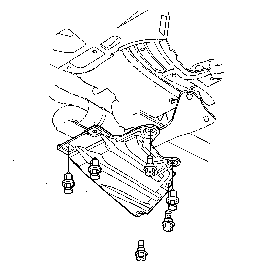
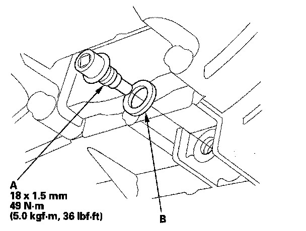
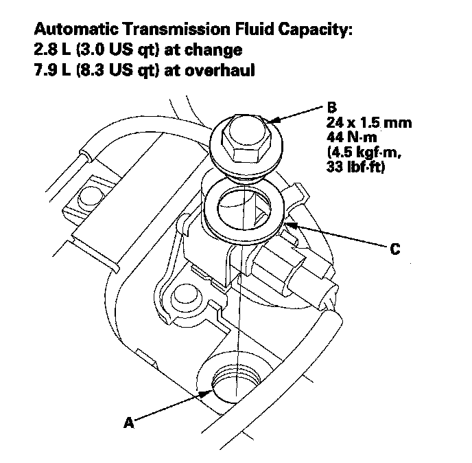
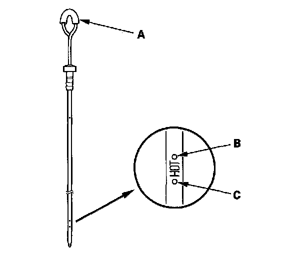
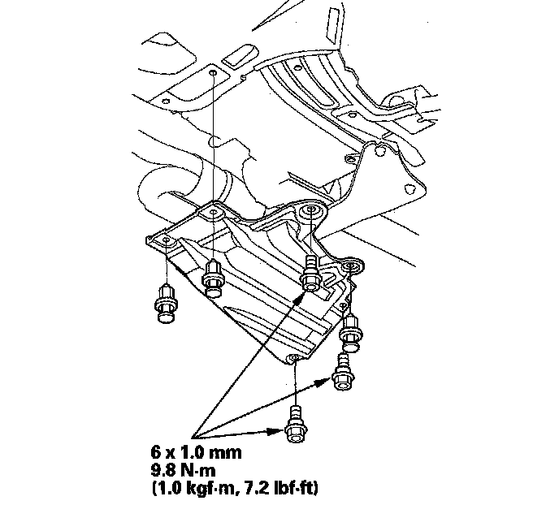
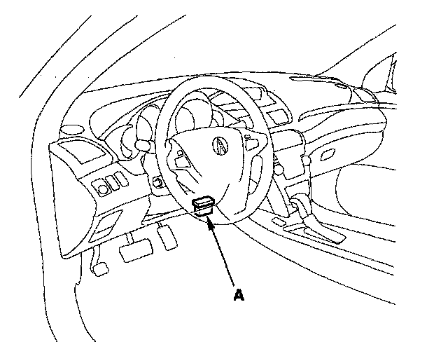

ATF Replacement
ATF ReplacementNOTE: Keep all foreign particles out of the transmission.
1. Park the vehicle on the level ground.
2. Warm up the engine to normal operating temperature (the radiator fan comes on) and turn the engine off.
3. Raise the vehicle up on a lift, or apply the parking brake, block both rear wheels, and raise the front of the vehicle. Make sure it is securely supported.
4. Remove the transmission undercover.

5. Remove the ATF filler bolt and drain plug (A) and drain the automatic transmission fluid (ATF)
NOTE: If a cooler cleaning is done, refer to ATF Cooler Cleaning.

6. Reinstall the drain plug with a new sealing washer (B).
7. Refill the transmission with the recommended fluid into the filler hole (A). Always use Acura ATF DW-1 (ATF Z1 has been replaced by ATF DW-1, Honda Service News Nov 2010) Automatic Transmission Fluid (ATF). Using a non-Acura ATF can affect shift quality.

8. Install the ATF filler bolt (B) and a new sealing washer (C).
9. Remove the dipstick (A).

10. Make sure the fluid level is between the upper mark (B) and lower mark (C) on the dipstick.
11. Install the transmission undercover.

12. If the maintenance minder required to replace the ATF, reset the maintenance minder and this procedure is complete. If the maintenance minder did not require to replace the ATF, go to step 10 and reset the ATF life with the HDS.
13. Connect the HDS to the DLC (A) and go to the BODY ELECTRICAL. If the HDS does not communicate with the PCM, troubleshoot the DLC circuit.

14. Select ADJUSTMENT in the GAUGES MENU with the HDS.
15. Select RESET in the MAINTENANCE MINDER with the HDS.
16. Select MAINTENANCE SUB ITEM 3 RESET, and reset the ATF life with the HDS.